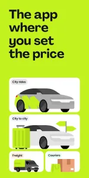

indrive这六年：从一个打车App变成跨角色出行平台的迭代轨迹
从乘客模式到司机端验证、从城内接单到城际长途、从快递员到货运卡车——indrive一路走来的版本迭代里藏着哪些产品决策逻辑？
现在这版：一个不止能打车的应用
打开 indrive官网，下拉菜单里的身份切换让我每次都要愣一下——乘客、司机、快递员、货运，四种角色共享同一个安装包，从官方下载拿就行。最近这几个版本的更新日志里，最显眼的一行是「城际出行独立规则集」，把长途行程的电话确认、过路费分摊、行李沟通这些之前散落在各处的注意点，正式收进了独立的功能模块。

这件事本身不复杂，但放在 indrive 的版本迭代脉络里看，其实是一个很能说明问题的信号。让我先把时间线理一理。
起步：只有乘客的打车匹配
样本文档里没有 indrive 最早版本的痕迹，连"历史版本"这个目录都不存在。这其实是一种很典型的文档策略——当早期版本的功能和现在已经不在一个维度上时，文档宁愿不提。
我查不到 indrive 第一个版本具体加了什么，但从它的核心机制推断，早期应该就是最简单的供需匹配：乘客发单，司机应答，平台抽成。这个阶段的文档如果有的话，大概只有"怎么注册"和"怎么出价"两部分。
真正有记载的第一个大转折点，是司机端的引入。
第一版大升级：司机验证体系上线
我在indrive文档里看到最细致的一组内容就是司机端相关的——服务费什么时候扣、验证审核多久通过、接单优先级怎么提高。从文档的组织方式来看，这部分是后来才逐渐丰满起来的。
让我印象比较深的是服务费的扣费节点设计。不是接单时扣，也不是到达后扣，而是三个触发点：到达上车点、通过应用拨打电话、点"我到了"。这三个节点的选择明显经过反复打磨——既要让司机有安全感（接单不花钱），又要防止恶意占位（真开始行动了才是这单成立的信号）。
审核驳回的四种常见原因（照片模糊、信息不一致、传错图、翻拍照片），从文案的语气看像是踩过不少坑才总结出来的。早期版本如果没有明确的拍摄指引和驳回原因分类，司机端的审核通过率估计惨不忍睹。
第二版大升级：城际与长途从"一个特例"变成"一个产品线"
这是我觉得 indrive 最近最值得聊的一次迭代。
之前城际出行在 indrive 里大概就是"价格更高的订单"，没有独立的规则。但样本文档里专门有一页城际出行注意点，按下单前、接单后、行程中、到达后四个阶段整理了十几条注意事项。这里面很多点在城内场景下根本不存在——过路费的承担、长途行李的沟通、行程分享给亲友、中途休息的约定。
更关键的是电话确认的强调。城内打车基本靠应用内沟通，城际单却明确要求接单后先打五分钟电话确认价格、出发时间、上车点。这个变化的背后，是 indrive 把城际从"城内的延伸"重新定位成了"一个独立的出行品类"。
第三版：多角色扩张的谨慎节奏
快递员模式和货运卡车模式是更晚才加进来的功能。有意思的是，样本文档对这两块的着墨明显少很多——有功能介绍页，但没有像司机端那样细致的扣费规则、审核标准、优先级体系。
这说明 indrive 的产品团队在做角色扩张时保持了一个很克制的节奏：新角色先上线跑起来，把核心匹配链路打通，等数据量上来、问题暴露出来了，再像司机端那样补全规则体系和文档。不是一口气堆功能，而是一个角色一个角色做深。
规律：从迭代节奏看团队在死磕什么
把这些版本变化放在一起看，我觉得 indrive 的产品优先级有一条很清晰的主线：信任机制先于功能扩张。
最早的版本是纯匹配，没有司机身份验证，没有服务费约束，没有双向评分。然后一口气补了司机验证体系——证件上传、审核流程、驳回原因、验证后的权益。这一套东西文档里写得最细，说明是投入了最多精力的模块。
然后是城际出行的独立规则集。为什么？因为长途行程的信任成本远高于城内——金额大、时间长、人对人的直接接触更多。把规则细化到"出发前打五分钟电话"，本质上是在用产品设计弥补长途场景下天然更高的交易风险。
反过来看，什么东西一直没跟上？文档层面的多角色深度展开。快递员和货运模式上线了，但没有像司机端那样的扣费节点、审核细则、优先级算法的文档。团队显然在同时铺多个角色的骨架，但还没来得及给每一个都装上完整的器官。
这个优先级排序很有意思。很多出行类应用的路径是先铺品类、先占场景，规则和信任体系后补。indrive 反过来——先在一个角色上把信任机制做扎实，再去扩场景和品类。
预判：下一步大概会往哪走
从当前的迭代规律推，我觉得 indrive 接下来大概率会做两件事：
第一件是把司机端那套精细的规则体系，逐步复制到快递员和货运角色上。现在这两个角色只有最基础的匹配功能，服务费怎么扣、审核标准是什么、接单优先级怎么算，这些司机端已经跑通两年的机制，迟早会平移过去。
第二件是继续深挖安全和信任的产品设计。行程分享功能在文档里出现了，但目前只是"分享实时位置和车牌"——后面会不会加上行程异常预警、一键求助的结构化引导？双向评分体系已经有了，但评分怎么在匹配权重里起作用，样本文档没说。这些留白的地方，大概率就是下一版要填的。
当然这都是从迭代规律推的，不当官方口径传。indrive 的产品团队如果有别的想法，那就是另一回事了。
写在最后
如果你是 indrive 的新用户，翻一遍它的文档——不是从零开始学操作，而是看哪些功能有细致的规则、哪些只有简单的介绍——你大概能猜到这个应用接下来会往哪个方向走。功能的深浅藏着团队的优先级，而优先级藏着他们对这个市场的判断。
indrive 的文档和功能都能在官方渠道查到，它的代码仓库也在几个平台同步维护，感兴趣的朋友可以顺着看。
代码仓库的资料也有备份
indrive 的相关资料在三个代码仓库都能拿到，方便不同偏好的开发者查阅——GitHub上的文档维护是主力，Gitee和GitCode作为国内镜像同步更新，免得偶尔网络波动时翻资料受阻。